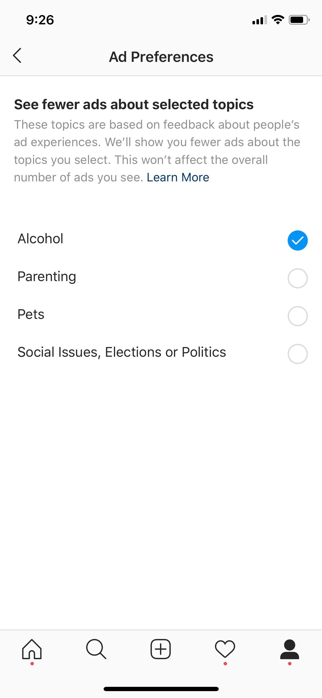
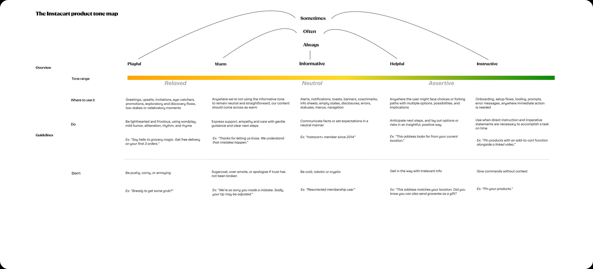
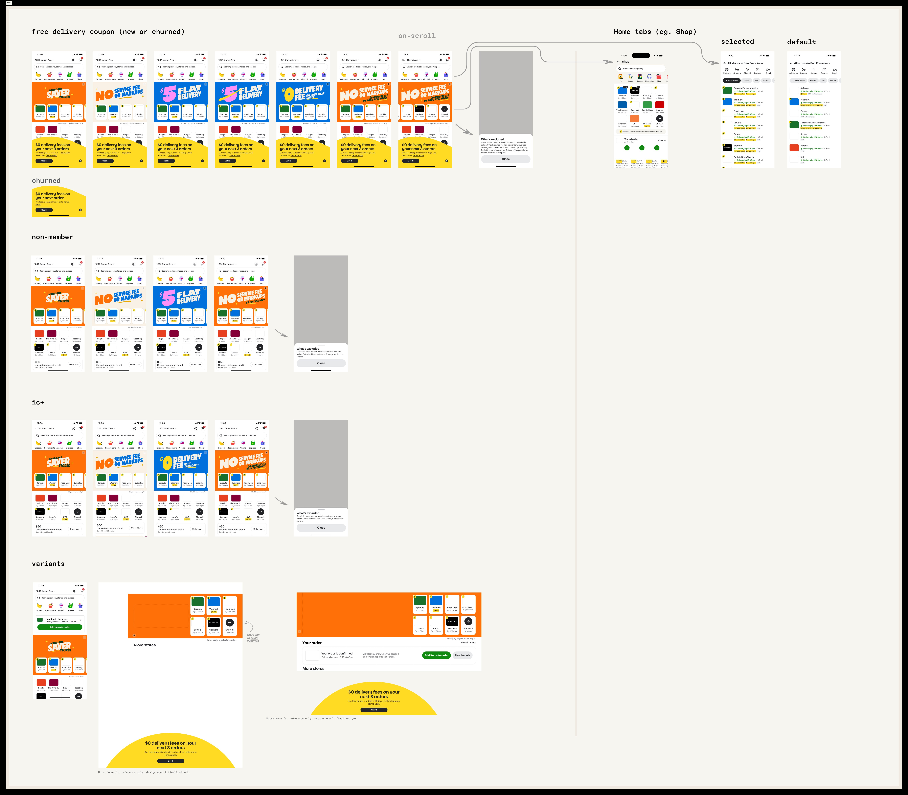
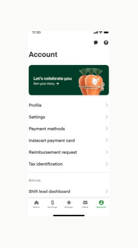

This portfolio is password protected. Please enter the password to continue.
I craft content strategies, voice & tone frameworks, and product copy that earns its place in the interface—and occasionally makes people smile.
About me
I'm a content designer with roots in journalism and a career that has wound through personal finance, financial services, social media, and grocery tech. From breaking down credit card fine print at Bankrate to shaping how Instagram explained ads privacy to hundreds of millions of users, I've spent 21+ years figuring out how words fit into systems—and how to make those systems feel human.
My work lives at the intersection of strategy and craft: voice and tone frameworks, terminology systems for complex and sensitive products, 0-to-1 feature content, and AI prompt frameworks that keep automated copy on-brand and harm-aware. I've led content for high-stakes launches, partnered with legal and policy teams on regulated products, and sat in enough cross-functional meetings to know that the best ideas often come from the quietest person in the room.
Formerly published as Leslie McFadden.
Selected Work

Instagram had a policy problem: new ads privacy regulations required giving users control over the topics their ads were based on. The challenge wasn't legal compliance—it was translation. Policy language is precise but rarely human. I defined the content strategy for Instagram's first-ever ads privacy control, shaping how a sensitive and legally complex policy change got communicated to hundreds of millions of users.
That meant writing UI copy that felt clear and calm without minimizing user choice, developing the naming and framing for the topic categories, and partnering with legal, privacy, and policy teams throughout to ensure every word passed scrutiny without losing plain-language accessibility. I also led content alignment across Instagram and Facebook to ensure the ads privacy narrative stayed consistent across both platforms.
When Instacart built a new task system for shoppers, nothing had a name yet. I came in at zero—naming every shopper-facing task, writing all in-task educational guidance, guiding the tone direction, and developing the full terminology system that would define how the platform communicated with shoppers going forward.
The work required holding two things at once: consistency (shoppers needed to recognize patterns across tasks) and humanity (these are people doing real work, not buttons to click). The terminology system I built became the foundation for how the Task Platform speaks to shoppers across every workflow.

When a product grows fast, the voice can get lost in the shuffle. I contributed to Instacart's product tone map—defining one of the five tone registers and helping shape the criteria across the others. The framework spans from Playful to Instructive, each with clear usage guidelines, real examples, and the all-important "don't" column.
The goal wasn't to police word choice. It was to give every writer, PM, and designer a shared vocabulary for talking about tone—so that "warmer" and "more direct" mean the same thing to everyone in the room.

One offer. Four user states. Dozens of copy variants. This project required writing banner copy that could flex across new users, churned members, non-members, and IC+ subscribers—each with a different value prop, different emotional context, and different stakes.
From "No Service Fee or Markups" to "Flat Delivery"—each headline had to be bold enough to stop a thumb mid-scroll while staying true to the brand's voice. The result: a content system that gave the design team a full suite of tested, on-brand options for every scenario.

Instacart wanted to celebrate shoppers with a personalized in-app reel—think Spotify Wrapped, but make it grocery. I developed the storyline and the framework for how dynamic content would flow through each step, shaping a narrative arc that treated shoppers like the humans they are, not just a number in a funnel.
The standout moment: I took a real data point—shoppers pick more bananas than any other item—and made it funny. "That's bananas. Literally. You've picked 17,000." The reel was a hit with shoppers, and that line was a big reason why. This is what it looks like when a single good idea earns its keep.
Advocacy & Other Writing
After my own experience with the NYPD's Special Victims Division, I chose to go public—speaking with the New York Times, NY1, the New York Post, and the New York Daily News, and testifying before the New York City Council. That advocacy helped spark a Department of Justice investigation into the NYPD's mishandling of sexual assault cases.
I volunteer with Rise, a survivor-led organization that advances survivor-centered legislation. And I write Fractured, a newsletter examining what happens after reporting—where systems fail survivors, and how they can be reformed.
This work isn't separate from what I do professionally. It's the reason I care so much about language that doesn't abandon people—in policy disclosures, in crisis communications, in any product that touches something that matters.
Published Writing
Experience
Contact
I'm open to new opportunities—full-time roles, collaborations, or just a good conversation about content strategy, advocacy, or what it means to write for people in high-stakes moments. Feel free to reach out.